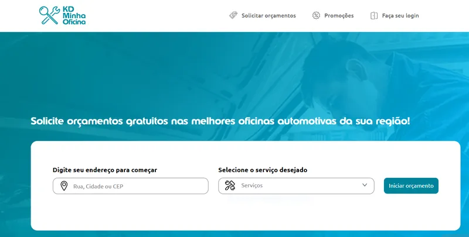
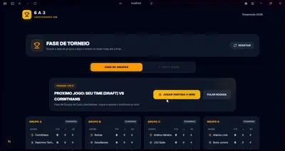
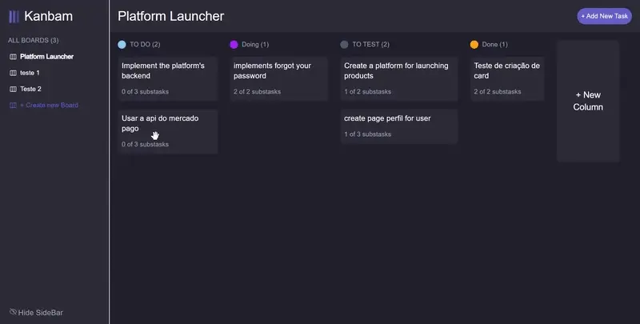
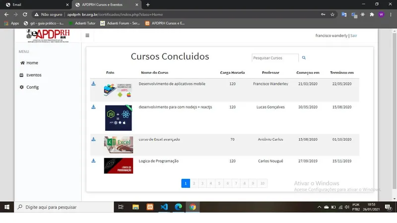
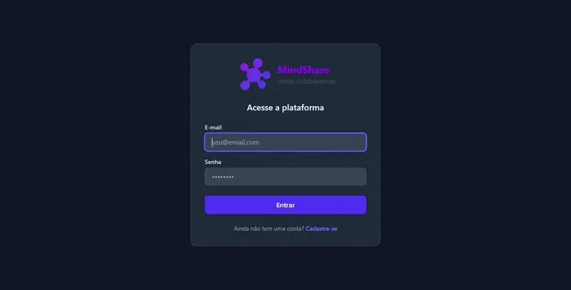

Francisco Wanderly
Desenvolvedor Full Stack
Desenvolvedor Full Stack com 3 anos de experiência especializado na construção de aplicações escaláveis de ponta a ponta. Focado no ecossistema JavaScript/TypeScript (React, Next.js, Node.js) e microsserviços com Java e Spring Boot.
Sobre Mim
Minha Jornada
Sou o Francisco Wanderly Texeira dos Santos Filho, apaixonado por resolver problemas complexos e otimizar a performance de sistemas. Com 3 anos de vivência no desenvolvimento web, atuo na criação de interfaces modernas e interativas no front-end, assim como na estruturação de arquiteturas e microsserviços eficientes no back-end.
Busco sempre aplicar as melhores práticas de desenvolvimento, como Clean Code, SOLID e metodologias ágeis, com o compromisso de entregar produtos de alta qualidade técnica que realmente gerem valor de negócio.
Vamos conversarExperiência Profissional
Estagiário em Desenvolvimento Full Stack
Zallpy Digital Setembro de 2021 - Março de 2022- Apoio no desenvolvimento front-end com React e back-end com Java / Spring Boot.
- Criação de componentes modulares e integração fluida com APIs REST.
- Escrita de testes unitários e de integração para validação de entregas.
Desenvolvedor Full Stack Júnior
Zallpy Digital Abril de 2022 - Abril de 2024- Desenvolvimento front-end em React/Next.js e back-end em Java/Spring Boot para o produto Kdminhaoficina.
- Atuação em equipe ágil (Scrum) com foco em otimização de performance e correção de bugs.
- Liderança no desenvolvimento de painéis administrativos (back-office) para gestão operacional.
Desenvolvedor Front-End (Freelancer)
Box3 (Cliente: Grendene) Janeiro de 2026 - Atualmente- Desenvolvimento de Controladora: Liderança no front-end de alta performance para a aplicação de controle operacional da Grendene.
- Micro-frontends & Module Federation: Implementação de arquitetura de Micro-frontends com Module Federation para desenvolvimento descentralizado.
- Modernização de Build: Otimização do ambiente de dev e build com Vite, reduzindo tempos de carregamento.
Projetos de Destaque

kd Minha Oficina
Projeto de grande porte da Zallpy Digital, no qual atuei ativamente como desenvolvedor Full Stack estruturando o front-end responsivo com React / Next.js e o ecossistema de microsserviços com Java e Spring Boot.

🏆 6 a 3 | Simulador da Copa Libertadores
O projeto permite que o usuário vivencie toda a jornada do torneio continental: desde a montagem do elenco dos sonhos através de um sistema de "Draft" com orçamento restrito, passando pelo ajuste tático e formação do time, até a simulação detalhada da fase de grupos e das fases eliminatórias de mata-mata em busca da Glória Eterna!


